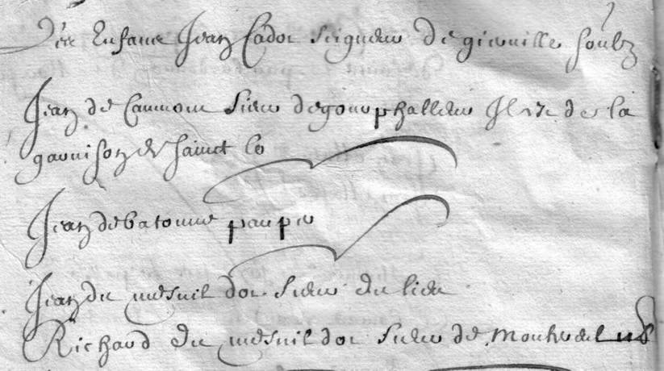
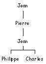
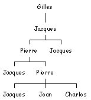
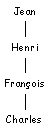
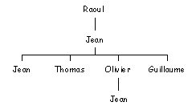

Présentation
 Cette
page rassemble les principales recherches de noblesse,
montres militaires et rôles nobiliaires concernant la famille
de Caumont.
Cette
page rassemble les principales recherches de noblesse,
montres militaires et rôles nobiliaires concernant la famille
de Caumont.
Les documents présentés couvrent une
période allant du XVe siècle
au XVIIe siècle et permettent de suivre
l'évolution des différentes
branches de la famille à travers les enquêtes
ordonnées par les
autorités royales.
État des enfants
des anoblis (1470)
Référence
:
1 Mi 67 R1, copie de P. de Farcy à partir du fonds
Martainville
(Bibliothèque de Rouen). Également
publié dans
Anoblissements des Francs
Fiefs 1470,
Hippolyte Sauvage, Notices, Mémoires et Documents,
tome 26, 1908.
Provenance :
Archives départementales de la Manche et
Bibliothèque municipale de Saint-Lô.
Ce document recense les enfants
et héritiers de personnes
reconnues nobles, soit par lettres particulières,
soit par les dispositions relatives aux Francs-Fiefs.
Ensuict les noms, le nombre et déclaration des enffans,
dont les pères sont trespassez, lesquelz en leur vivant
furent nobles, tant par lettres particulières à
lacz de soye
et cire verde, comme par la charte générale des
Francs Fiefz
et nouveaux acquetz, par les eslections, ainsi qu'il est
cy après particulièrement contenu et
déclaré.
En l'Eslection de Coustances :
• les hoirs de feu
Richard
de Caumont
Montre de la Hogue (1512)
Référence
:
Copie de la Montre de la Hogue, 1512.
Provenance :
Yvon Corfa.
La montre de la Hogue recense
les hommes d'armes et les
membres de la noblesse appelés au service du roi dans le
cadre de l'organisation militaire du début du XVIe
siècle.

Jean de Caumont
,
sieur de Gourphalleur [Gourfaleur]. Il est de la garnison de
Sainct-Lo
Cette mention atteste la présence de
Jean
de Caumont
parmi les hommes relevant de la garnison de Saint-Lô
au début du XVIe siècle.
Recherche de 1524
Références
:
Recherche et Maintenues de 1524, copie de P. de Farcy,
réalisée à partir du fonds
Martainville de la Bibliothèque
de Rouen (1 Mi 67 R1) (version 1) et La Recherche de Jean Le Venart,
Notices, Mémoires et Documents publiés par la
société d'Agriculture, d'Archéologie,
et d'Histoire Naturelle du département de la Manche, 24e
volume, 1906 (version 2).
Provenance :
Archives départementales de la Manche.
Armes de la famille
De Caumont : écartelé d'argent à 6
merlettes de sable
et d'argent à 6 quintefeuilles de gueules.
Présentation du
dossier
Cette recherche concerne
Jean
de Caumont,
seigneur du Tremblay. Le document expose sa
généalogie
et les preuves produites afin de justifier ses privilèges
de noblesse.
Filiation
présentée en 1524
-
Philippe
de Caumont,
seigneur du Tremblay et de Saint-Martin-de-Caumont
-
↓
Regnier
de Caumont
× Gillette Le Grand
-
↓
Jean
de Caumont,
seigneur de Gourfaleur
× Jeanne de Saffray
-
↓
Jacques
de Caumont
× Luce Le Chevalier
-
↓
Jean
de Caumont,
avocat au parlement de Rouen
× Anne Roc
-
↓
Jean
de Caumont,
seigneur du Tremblay
(demandeur en 1524)
Transcription de la recherche
(version 1)
Pour du party de N[oble] h[omme] Jean
de Caumont
S[ieu]r de tremblay fils et heritier de deffunct Jean
de Caumont
en son vivant S[ieu]r dud[it] lieu, produict ?? en ensuivant le
voulloir du Roy notre souverain seigneur l'ordonnance et appointement
de justice, l'estat et progeniture dud[it] de Caumont remonstre ce qui
en suit.
Dict qu'il est fils legitime dud[it] deffunct M[aitr]e Jean
de Caumont
en son vivant Esc[uye]r S[ieu]r dud[it] lieu de tremblay avocat en la
cour de parlement à Rouen et de D[amoise]lle Anne Roc son
espouse.
Dict aussy que led[it] M[aitr]e Jean
de Caumont
cy devant nommé père dud[it] Jean à
present estoit fils de deffunct Jacques
de Caumont
en son vivant Es[cuye]r et de D[amoise]lle Luce Le Chevalier.
Icelluy Jacques
fils de deffuncts Jean
de Caumont
en son vivant S[ieu]r du fief terre et S[eigneu]rie de Gourfallour fief
plain et entier de haubert et de N[oble] D[amoise]lle Jeanne de Saffrey
Icelluy Jean
sorty de N[oble] h[omme] Regnier
de Caumont
et de N[oble]
D[amoise]lle Gillette Le Grand et led[it] Regnier
sorty de N[oble]
h[omme] Philippe
de Caumont
en son v[ivan]t S[ieu]r dud[it] lieu du
Tremblay et de S[ain]t Martin de Caumont.
Lesquels dessusd[its] ont tenu et vesquy(?) noblement par cy dev[an]t
comme ces choses sont vrayes, notoires et que sy doubte en est faicte
led[it] Jean
de Caumont
à présent l'entend
verifier à suffire ?? aydant à cette fin et
avecques ycelluy privillege de noblesse dict et remonstre led[it]
à present S[ieu]r de Caumont que lesd[its]
prédécesseurs et luy par leurs successions
estoient et sont et doibvent estre pour l'advenir avecques lesd[its]
privilleges de noblesse du privillège de la monnoye du
serment de France et pour ces choses veriffier et fournir monstre ce
qui en suit.
S'aide led[it] Jean
de Caumont
à present d'une lettre en
dabte de l'an 1459 contenant les choses dessusdites
vériffiées en jugemend contradictoire entre le
procureur du Roy et led[it] Jean
de Caumont
S[ieu]r de Gourfalleur.
Item s'aide d'un mémorial donné ès
plis de la Baronnie de S[ain]t Lô signé Chesnel en
Juillet 1453 comme led[it] Jean
de Caumont
bailla l'adveu et
denombrement de sad[ite] terre de Gourfalleur.
Item s'aide d'un extraict de registre collationné
à l'original par les tabellions de S[ain]t Lô en
dabte du 26e jour de novembre 1478 contenant comme dud[it] Jean
de Caumont
descendy Jean
et Jacques
dicts de Caumont
frères.
Item s'aide d'un extraict de registre daté du 21e jour de
[septem]bre 1509 contenant comme dud[it] Jacques
fils second descendy
ledit M[aitr]e Jean
de Caumont
père dud[it] Jean
à present.
Item d'autre lettre du 14e jour d'octobre 1522 contenant comme dud[it]
M[aitr]e Jean
de Caumont
est descendu led[it] Jean
à present.
Item dict et remonstre que Il et ses
prédécesseurs ont toujours continuellement servy
le Roy en ses monnoyes comme ?? et à cette cause il et ses
semblables sont quictes et exempts des tailles et autres ?? par les
privilèges à eux donnés et
octroyés par les Roys de France que Dieu absoutte et
confirmes par le Roy à present regnant ainsy qu'il apparest
par ses lettres patentes. Produict aujourdhuy 18e jour de Juillet 1523
dev[an]t Jean Le Venart L[ieutenan]t des ?? ?? ?? de Coustances
à S[ain]t Lô. Signé Jean de Caumont. ??
que lesd[ites] lettres ?? été veues et rendues
aud[it] de Caumont.
Pièces
justificatives produites
-
Lettre de 1459 confirmant judiciairement
la noblesse de la famille.
-
Mémorial de juillet 1453 concernant
l'aveu et dénombrement de la terre de Gourfaleur.
-
Extrait du 26 novembre 1478 mentionnant
Jean et Jacques de Caumont.
-
Extrait du 21 septembre 1509 relatif à
Jacques de Caumont.
-
Lettre du 14 octobre 1522 établissant
la descendance de Jean de Caumont.
-
Justification des privilèges liés au service
des monnaies royales.
Transcription de la recherche
(version 2)
Pour suivre le voulloir du Roy, nostre Souverain Seigneur, noble homme
Jean
de Caumont
, sieur du Tremblay, filz et héritier de
deffunct Jean
de Caumont
, en son vivant sieur dud. lieu, produit et
montre son estat de
progéniture et remontre ce qui suit :
Dit qu'il est filz légitime dud. Mre Jean
de Caumont,
escuier, en son vivant sieur du Tremblay, advocat en la cour de
parlement à Rouen et de Damoiselle Anne Roc, son espouse.
Dit aussy que led. Mre Jean
de Caumont
, cy devant nommé, son
père, estoit filz de deffunct Jacques
de Caumont
, en son
vivant, escuier, et de damoiselle Luce Lechevallier ; icelluy Jacques
,
filz de deffunct Jean
de Caumont
, en son vivant seigneur du fief, terre
et sieurie de Gourfalleur, fief plain et entier de haubert, et de noble
damoiselle Jeanne de Saffray ; icelluy Jean, sorti de noble personne
Regnier
de Caumont
et de noble damoiselle Gillette Le Grand ; et led.
Regnier
sorty de noble homme Philippe
de Caumont
, en son vivant sieur
dud. lieu du Tremblay et de Sainct-Martin de Caumont.
Lesquels dessusd. ont tenu et vesquy noblement par cy devant comme ces
choses sont vrayes, notoires et que sy doute en est faict, led Jean
de Caumont
à présent l'entend vériffier
à suffire, soy aidant à ceste fin, et
avecques icelluy privilège de noblesse, dict et remontre
led. à présent sieur de Caumont que ses
prédécesseurs et luy par succession,
étoient et sont et doibvent pour l'advenir estre maintenus
avecques leurs privilèges de noblesse, du
privilège de la monnoye du service de France, et pour ces
choses vériffier et fournir, montre ce qui en suict :
S'aide led. Jean
de Caumont
d'une lettre, en dabte de l'an mil quatre
cens cinquante neuf, contenant les choses dessusd. vériffiez
en jugement contradictoire entre le procureur du roy et led. Jean
de Caumont
, sieur de Gourfalleur.
Item, s'aide d'un Mémorial donné ès
plez de la baronnie de Sainct-Lo, signé Chesnel, en juillet
mil quatre cens cinquante trois, comme led. Jean
de Caumont
bailla
l'adveu et dénombrement de lad. terre de Gourfalleur.
Item, s'aide d'un extraict de registre collationné
à l'original par les tabellions de Sainct-Lo, en dabte du
vingt six[ie]me jour de novembre mil IIIIc LXXVIII, contenant comme
dud. Jean
descendyrent Jean
et Jacques de Caumont
, frères.
Item, s'aide d'un extraict de registre dabté du vingt
un[ie]me jour de septembre mil cinq cens neuf, contenant comme dud.
Jacques
, second filz, descendit led. Mre Jean
de Caumont
, filz dud Jean
à
présent.
Item, d'une lettre du quatorz[ie]me jour d'octobre mil cinq cens vingt
deux, contenant comme dud. Mre Jean
est descendu led. Jean
à
présent.
Item, dict et remontre que il et ses prédecesseurs ont
tousiours continuellement servy le roy en ses monnoyes comme dessus, et
à ceste cause il et ses semblables sont quittes et exempts
des tailles et autres subjections par les privilèges
à eux donnez et octroyez par les roys de France que Dieu
absolve, et confirmez par le Roy, nostre sire, à
présent régnant, ainsy qu'il apparoist par ses
lettres patentes.
Produict aujourd'huy dix huict[ie]me jour de juillet mil cinq cens
vingt-trois devant Jean Le Venart, lieutenant de messieurs les esleus
de Coutances, à Sainct-Lo.
Signé : Jean
de Caumont
. Paraphe.
Apprès que, lesd. lettres ont été
veues et rendues aud. de
Caumont
.
Rôle de ban de la
vicomté de Coutances (1567)
Référence
:
Rôle de ban et
d'arrière-ban de la vicomté de Coutances en 1567,
Léonor de Mons, Viridovix, 2012, pages 29 à 41.
Provenance :
Archives départementales de la Manche.
Le rôle de ban et
d'arrière-ban recense les nobles tenus
d'assurer le service militaire en fonction des fiefs qu'ils
possèdent. Il constitue une source précieuse pour
localiser
les membres de la famille de Caumont et évaluer leur
position
au sein de la noblesse du Cotentin au XVIe siècle.
[136]
Jehan
de Caumont,
sieur de Gourfaleur
(note 112 : plein fief de haubert à Gourfaleur,
relevant de la 1/2 baronnie du Hommet-Villiers),
imposé à 16 livres.
Commentaire
Cette mention confirme la possession par
Jehan
de Caumont
de la seigneurie de Gourfaleur en 1567.
La qualification de
plein fief de haubert
indique un fief noble complet,
assorti d'obligations militaires envers le souverain.
Le rattachement à la demi-baronnie du Hommet-Villiers
permet également de situer précisément
la dépendance
féodale de la seigneurie de Gourfaleur.
Recherche de Roissy (1598-1599)
Référence
:
Recherches de la noblesse de
Normandie,
Stephano-Louis-Marye de Merval,
cote 1 Mi 395.
Provenance :
Archives départementales de la Manche.
La recherche conduite par
Roissy à la fin du XVIe siècle
visait à vérifier les prétentions
nobiliaires des familles
normandes et à confirmer leur droit aux
privilèges attachés
à la noblesse.
Branche de Gourfaleur
de Caumont :
Jean
de Caumont,
s[ieu]r de Gourfalleur y demeurant sergenterie de Sainct Gilles, et Pierre,
son oncle demeurant dans l'ellection de Coustances ;
veu leurs titres, jouiront.
Interprétation
Les commissaires reconnaissent la validité des titres
produits par cette branche de la famille de Caumont,
ce qui lui permet de continuer à
bénéficier des
privilèges de noblesse.
Branche de Caen
de Caumont :
Pierre
de Caumont,
procureur du roy au bailliage de Caen,
fils Jacques,
a pour fils
Jacques.
Jacques,
sieur de Soquance,
frère dudit Pierre,
demeure à présent aud[it] lieu et a de fils
Gilles,
Philippes
et
Jean.
Veu leurs titres, jouiront.
Recherche d'Aligre (1634)
Référence
:
Recherches de la noblesse de
Normandie,
Stephano-Louis-Marye de Merval,
cote 1 Mi 395.
Sources
complémentaires :
D. J. Sturdy,
Tax Evasion, the Faux Nobles
and State Fiscalism:
The Example of the Généralité of Caen,
1634-1635,
French Historical Studies, vol. 9, 1976.
Provenance :
Archives départementales de la Manche.
La recherche
ordonnée par le chancelier d'Aligre avait pour
objectif de contrôler les prétentions nobiliaires
et de lutter
contre les usurpations de noblesse. Les familles devaient produire
leurs titres et démontrer leur filiation noble.
Transcription de la recherche
de Caumont : Veu les tiltres présentés par Jean
et Guillaume
de Caumont escuyers,
frères, led. Guillaume
de
la parroisse de St michel en Gragnes, eslection de Carentan et led.
Jean
de la paroisse de Gorfaleur eslection de Coustances et pour les
sous ages de David
de Caumont leur
frère tous enfans de
Pierre
fils Jean
fils Jean
de Caumont escuyer, sieur de
Gourfaleur.
Actes des XIII juin et V aoust 1634 par lesquels il nous est apparu
led. Guillaume
avoir prins par attachement la
prévosté de la seigneurie de Graignes et
après l'avoir ouy ;
Avons ordonné que led. Jean
justiffiera plus amplement de la
descente de Jean
son ayeul dans six sepmaines autrement et à
faute de se faire sera imposé au roulle de la paroisse de
Gourfalleur et pour le regard dudict Guillaume
sera imposé
au roulle à VIII# en la dicte parroisse de St michel en
Greignes et pour avoir dérogé l'avons
condamné en LX# d'amende envers le Roy.
de Caumont : Veu les titres présentés par Jean
et
Guillaume
de Caumont
frères de la parroisse de Gourfalleur,
escuyers, enfans de Pierre
fils Jean
fils autre Jean
de Caumont
.
Avons ordonné que lesd de Caumont justiffieront plus
amplement autrement seront imposés.
Ont justiffié, jouiront.
Led. Guillaume
est condamné comme dérogeant en
l'eslection de Carentan au 161e jugement.
(idem pour ce paragraphe excepté dernière ligne
dans Fonds Martainville, manuscrit Y44, 1ère partie,
paragraphe 11, Bibliothèque de Rouen, envoi de Max Boggini)
Filiation retenue en 1634
-
Jean
de Caumont
(seigneur de Gourfaleur)
-
↓
Jean
de Caumont
-
↓
Pierre
de Caumont
-
↓
Guillaume
de Caumont,
Jean
de Caumont
et
David
de Caumont
Importance
généalogique
Cette recherche est particulièrement précieuse
car elle
fournit plusieurs générations successives de la
branche
de Gourfaleur et confirme officiellement la noblesse de la
famille après examen des titres produits.
Elle illustre également l'un des principaux enjeux des
recherches de noblesse du XVIIe siècle : la
nécessité de
démontrer une filiation continue et de prouver l'absence
de dérogeance.
Pour la branche de Graignes, c'est la fin de noblesse.
Rôle de la noblesse
du Cotentin (1640)
Référence
:
Rôle de la Noblesse
du Grand Bailliage du Cotentin (1640),
publié dans les Notices,
Mémoires et Documents,
tome XI, 1908.
Provenance :
Archives départementales de la Manche.
Ce rôle dresse un
état de la noblesse du Grand Bailliage du
Cotentin au milieu du XVIIe siècle. Outre l'identification
des familles nobles, il fournit parfois des indications
particulièrement intéressantes sur leur fortune,
leurs charges
et leur réputation locale.
Vicomté de
Saint-Lô
Gourfaleur
Les hérittiers de
Jean
de Caumont,
écuyer. Est Juge à la Justice de Serence (sic) ;
riche de 2000 l[ivres] t[ournois] de rente.
mauvais homme.
Intérêt
historique
Cette notice ne s'intéresse pas seulement à la
noblesse
de la famille, mais également à sa situation
sociale
et économique.
La mention de
2 000 livres de rente
témoigne d'une situation relativement confortable pour
une famille noble provinciale du milieu du XVIIe siècle.
L'expression
« mauvais homme
»
constitue probablement une appréciation personnelle du
rédacteur du rôle. Ces remarques, assez rares dans
ce type
de document administratif, apportent parfois un éclairage
intéressant sur la réputation locale des
individus
recensés.
Recherche de Chamillart (1666)
Référence
:
Recherche de la Noblesse faite
par ordre du Roi Louis XIV
en 1666 et années suivantes,
Guy Chamillart, édition publiée en 1887.
Provenance :
Archives départementales de la Manche.
La grande recherche de noblesse
menée par
Guy Chamillart
constitue l'une des enquêtes
les plus importantes de l'Ancien Régime.
Elle avait pour objectif de vérifier les droits des familles
se disant nobles et d'écarter les usurpateurs.
Branche de Gourfaleur (Seconde
partie : nobles qui ont prouvé leurs quatre
degrés sans anoblissement connu)

Portent :
écartelé d'argent ; chargé au 1er et
4e quartiers, de 3 merlettes de sable ; au 2e et 3e, d'une
quintefeuille de gueules
Philippe
et
Charles
de Caumont,
Ers sieurs de la Péguilie et de la
Chatonnière,
demeurant en la paroisse de Gourfaleur la Place, serg. de Saint Gilles,
élect. de Coutances, Philippe
âgé de 41
ans.
Jean
, fils Pierre épousa Dlle
Anne Le Bas en 1626 en
deuxièmes noces, et, en premières, Dlle
Marie Le
Cimier (?) en 1613
Philippe
, Dlle
Diane Goeslard en 1646
Charles
, Dlle
Suzanne du Chemin en 1656
Branche du Tremblay (p.323)

Jacques de Caumont,
24 ans, avocat au Parlement, paroisse de St
Contest, banlieue de Caen, Sr du Tremblay y demeurant ;
Jean
et
Charles
mineurs.
Jacques
fils Gilles,
épousa Dlle
Claude Lesueur en 1555
Pierre
fils Jacques, Dlle
Jeanne
de Maimbeville
Pierre
fils Pierre, Dlle
Gabrielle Marc en 1642
Alliance avec la famille le
Vallois (p.525)

Charles Le Vallois Er
sieur de Raffeton demeurant en la paroisse de Clécy,
sergenterie de Saint Jean le Blanc, élection de Vire, R.R.
Jean épousa Delle
Jacqueline de Nocy en 1571
Henri, Delle
Jeanne de Fédebry en 1581
François, Delle
Élisabeth
de Caumont
en 1611
Charles, Delle
Catherine Le Febvre en 1642
Alliance avec la famille de
Faoucq (p.117)

Raoul avait
épousé Delle Luce de Villiers en
premières noces et en secondes noces dame Perrette Bacon
Jean Ier
avait épousé Mme Jeanne de
Colombières en 1395
Olivier, Delle
Catherine
de Caumont
en 1423
Jean de Faouq II épousa dame Jeanne de Mons en 1461...
Importance historique
La Recherche de Chamillart constitue l'une des sources
généalogiques les plus riches concernant la
famille
de Caumont. Elle documente simultanément plusieurs
branches de la famille et permet de confirmer de
nombreuses alliances nobles.
La présence de la famille dans les maintenues de noblesse
de 1666 confirme sa reconnaissance officielle parmi la
noblesse normande sous le règne de Louis XIV.
Dernière
mise à jour : 27 novembre 2026
← Retour à
la famille de Caumont
Recherches généalogiques et historiques
réalisées par Damien Rauline